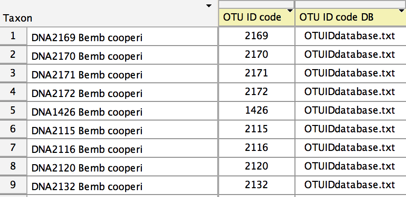
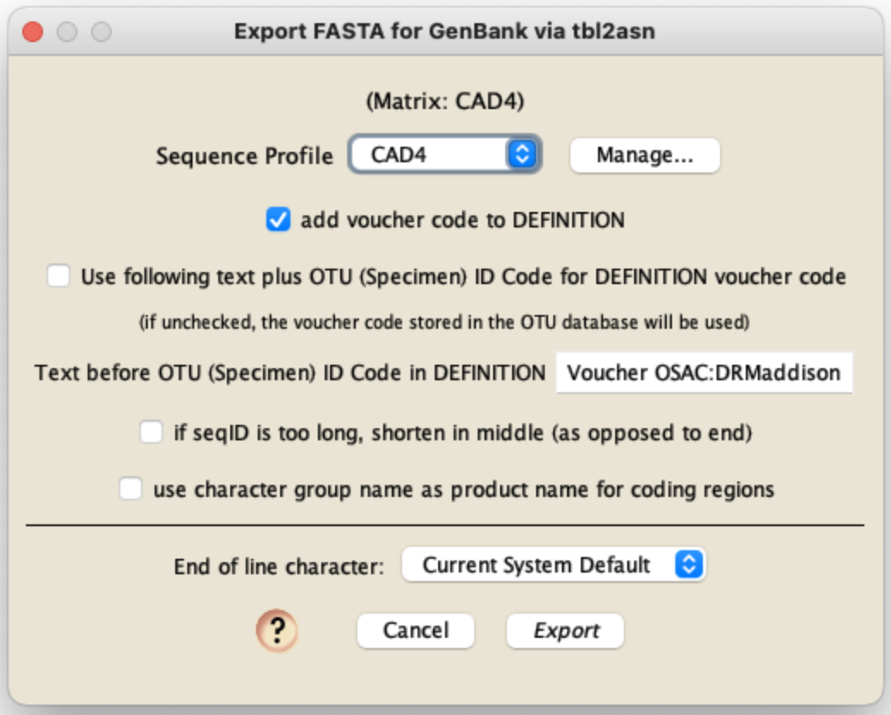
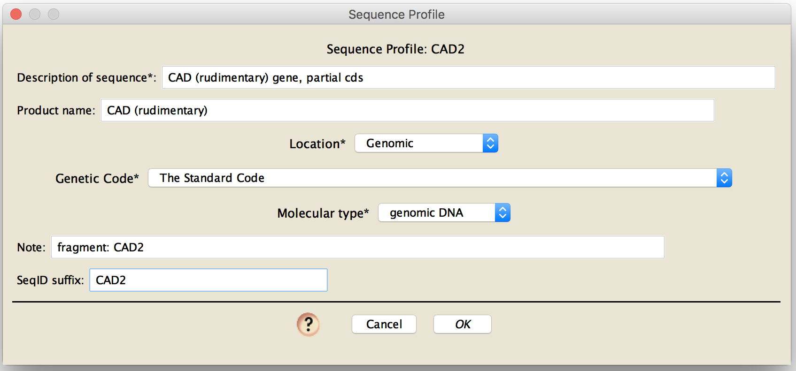

Preparation of files for submission using tbl2asn
Chromaseq has two features designed to aid submitting sequences contained in a Mesquite file to GenBank. The primary tool, described here, allows for preparing files for use by tbl2asn. There is also a legacy tool for submitting sequences via Sequin.
This system is built to submit sequences from one matrix at a time.
To prepare files for submission by tbl2asn, you will need the following:
- The tbl2asn program from NCBI.
- A submission template file containing information about your paper.
- A tab-delimited text file containing information about each sample whose data will be submitted. This file contains organism's name, authority, locality data, etc. This is called the "OTU ID code Database" or "OTU ID code DB" file in Mesquite.
- A Mesquite file containing your sequences in a matrix. This will need to be prepared, including setting of codon positions for protein-coding regions.
With these ready basic procedure is to then:
- Export the matrix and feature table from within Mesquite. This will involve creating or choosing a sequence profile containing information about the properties of the sequences such as the genetic code, sequence description, etc.
- Run tbl2asn to create the file to be submitted to GenBank.
Download tbl2asn and get it ready for use
To create the file for submission to GenBank, you will need to use the program tbl2asn. Information about this program is available from
https://www.ncbi.nlm.nih.gov/genbank/tbl2asn2/
Download tbl2asn, and put it in the same directory as the files that you will create in the export process (see below).
You may need to make the file executable. On a UNIX-based machine (MacOSX or Linux), open up a shell (e.g., Terminal on a Mac), cd into the directory containing the file, and then use a command like the following:
chmod +x mac.tbl2asn
Creating the file containing information about the paper
Go to the NCBI Submission Portal and create a Submission Template for your paper. This will contain information about your submission to GenBank. Once you have filled in the form, press the Create Template button at the bottom of the page. That will create a text file containing information about your paper, and that file will be downloaded to your computer. Move that file (which will likely be called "template.sbt.txt"), and move it into the same folder as the fasta files you created. You will only need to make this file once; the one file can be used for all of your submissions for that paper.
Creating the sample table
The form of the tab-delimited OTU (specimen voucher) ID code file containing the information about the samples is as follows. The first row must begin with the word "code", followed by a tab-delimited list of the official GenBank names of the fields that appear in each of the later lines. For example, if the fields to be included are the organismal name, the taxonomic authority, the name of the person who identified the specimen, the country (locality) field, the latitude and longitude, and the information identifying the specimen voucher, then this first line would appear as follows:
codeorganism
(The black triangle,  , represents
a tab.)
, represents
a tab.)
The official GenBank names of the fields and the definition of those fields is given on the Modifiers for FASTA Definition Lines page, with more information on the Sequin Help page. You may include whatever fields you need.
On the following lines are the data about the specimens, one line for each specimen. The first item in the line is and ID code. This ID code could be your specimen voucher code, or some other unique identifying string. You will enter these codes in Mesquite for each sequence, which will allow the system to associate the OTU ID code DB information with that particular sequence. The following tab-delimited items in the line are the entries for that particular specimen. For the example file with the header line shown above, here are two lines that contain the information for specimen number 1290, and specimen number 1633:
1290
Each of these lines is shown extending over two lines, but that is only for ease of display on this web page. There are thus a total of three lines in this example OTU ID Code DB file:
code
Preparing the matrix and connecting the taxa to their metadata
For each matrix to be submitted, you will need to annotated the sequences appropriately.
In particular, the codon positions will need to be specified if any of the sequence are protein-coding. You can specify the codon positions in the List of Characters window in Mesquite. This does not necessarily require that the sequences be aligned, but it will be easier if they are. If they are not aligned, then each will need to be in the correct reading frame (which you can accomplish using the "Alter>Shift to Minimize Stop Codons" tool in Mesquite's matrix editor after you have specified the codon positions in general.
In addition, if there are distinct regions in the fragment that need to be specified in your GenBank submission (e.g., exons and introns, or multiple genes with intervening non-transcribed regions), then you will need to specify these using Character Groups, which you can do in Mesquite's List of Characters window.
You will also need to specify which taxon in your matrix corresponds to which entry in your sample table file. To do this, go to the Taxa List Window (Taxa&Tree>List of Taxa). You will need to show two new columns in this table. Choose Columns>OTU Database and Columns>OTU ID Code. This will show those two columns. Select the entire table (with Select All), and touch on the title of the OTU ID code DB column. A menu will appear in which you can choose to browse for your tab-delimited OTU ID code DB file. Select that file. The OTU ID code DB column should indicate which OTU ID code DB file to use for each sequence. (In this example, all sequences are using the same OTU ID code DB file.)
Now you need to enter into the OTU code ID field the ID codes for each of the sequences. In the example here, the OTU ID code for the first sequence is 1290. This tells Mesquite to look in the OTU ID code DB file for the line whose code is 1290 to get the OTU information for that sequence. To enter ID codes, use the editing tool () select the entry, or select the sequence and use the popup menu that appears when you touch on the OTU ID Code title at the top of the column. Once you have entered all of the OTU ID codes, the Taxa List Window should look something like this:

Creating the FASTA file and feature table file needed by tbl2asn
At this point, you are ready to export the files needed by tbl2asn to create your GenBank submission.
Do this by choose File>Export, and in the dialog that appears, choose "FASTA (DNA/RNA) for GenBank (tbl2asn)". You will be queried for options:

In this dialog box, you will need to choose a sequence profile and various other options. If you haven't created the relevant sequence profile, you should do that first. Sequence profiles are described in the following sections.
In addition to specifiying a sequence profile, you will need to specify various aspects of how Chromaseq formulates entries.
If you wish to have the OTU ID code added to the DEFINITION line (between the organismal specification and the description of the sequence), then check the "add OTU (Specimen) ID Code to DEFINITION" option. If you have that option checked, then the text you include in the next field will be included immediately in front of the ID code.
A GenBank submission requires that each submission be specified by a "seqID", a text string that must be unique for each sequence to be submitted. By default, Mesquite uses the taxon name, to which the gene fragment name can be appended, as the seqID. However, GenBank will automatically truncate the seqID if it is too long. If you have some important text at the end of the seqID that you don't want removed by GenBank, then yoiu can check the "if seqID is too long, shorten in middle" option.
If you are using character gropus to specify the product names for regions of your submission, you should check "use character group name as product name for coding regions" option.
Creating a sequence profile
A sequence profile stores information about a particular gene, gene fragment, or other region of DNA that you might wish to submit to GenBank. For example, if you have sequenced a region of the CAD gene, you might wish to create a sequence profile for that region. The metadata you include in the sequence profile will then be included along with the rest of your GenBank submission. This sequence profile is then saved by Chromaseq, and the next time you wish to submit sequences of that fragment, you can simply choose that profile from the pull-down menu.
To create a sequence profile, first press the Manage button in the main dialog box. The Sequence Profile Manager will appear:
To create a new profile, press "New..."; to edit the contents of a previously created profile, select it in the list and press "Edit...". The other buttons should be self-explanatory.
By pressing New or Edit, you will be presented with the dialog box in which you can enter data for the sequence profile.

You will need to enter data for the following fields:
Description of sequence: the text you enter in this field will be appended to the end of the DESCRIPTION field of GenBank
Location: This is the location of the source of the molecular data. The options are:
- Genomic
- Mitochondrion
- Chloroplast
- Apicoplast
- Chromatophore
- Chromoplast
- Cyanelle
- Endogenous_virus
- Extrachromosomal
- Hydrogenosome
- Kinetoplast
- Leucoplast
- Macronuclear
- Nucleomorph
- Plasmid
- Plastid
- Proplastid
- Proviral
Genetic Code: You will need to specify the genetic code for any protein-coding sequences. For non-coding regions, you can leave this to "The Standard Code".
Molecular type: This is the type of molecular data being submitted. The options are:
- genomic DNA
- genomic RNA
- mRNA
- tRNA
- rRNA
- other RNA
- other DNA
- transcribed RNA
- viral cRNA
- unassigned DNA
- unassigned RNA
SeqID suffix: This should be short, and should uniquely distinguish the sequences in one matrix from those in a second matrix that you might submit. For example, it could be the gene name. This will be appended onto each taxon name to form the SeqID for the sequences in the matrix to be submitted.
The optional fields are:
Product name: If the entire fragment to be submitted includes genes for only one product, then you can include the product name here. As an alternative, you could specify character groups (see above) and check the "use character group name as product name for coding regions" option in the main export dialog box. For protein-coding regions, you must specify a product name one of these two ways.
Note: If you wish to include a note with each of the entries, then enter it in the notes field. For example, you could give details about the fragment of the gene sequenced, or other metadata of relevance to your project.
Once you are ready, press the Export button. We suggest that the file name you ask to create not include any spaces.
Sharing sequence profiles
The sequence profiles are stored in the "SequenceProfilesForGenBank" directory that is in the "Mesquite_Prefs" directory of your "Mesquite_Support_Files" directory. You can put copies of any of these files into the equivalent place on another computer to make those profiles available to Mesquite on that other computer.
Using tbl2asn
- On the Mac or Linux, open up a UNIX shell. (On the Mac, you can start the application called Terminal in the Utilities folder in the Applications folder.) On Windows, open up the command line tool.
- cd into the directory containing tbl2asn and all of the files.
- type one of the following commands and hit Return, where you substitute "fileName.fsa" with the name of the FASTA file:
- MacOSX: ./mac.tbl2asn -t template.sbt.txt -a s2 -V vb -i fileName.fsa
- Windows: tbl2asn.exe -t template.sbt.txt -a s2 -V vb -i fileName.fsa
- Linux: ./tbl2asn -t template.sbt.txt -a s2 -V vb -i fileName.fsa
If you wish to see more details about the command-line options available for tbl2asn, see https://www.ncbi.nlm.nih.gov/genbank/tbl2asn2/
- once you have run tbl2asn, several files will be produced. Examine the errorsummary.val file for a summary of errors and warnings, and the other file that ends with ".val" (e.g., "fileName.val") for more detailed information about the errors and warnings. Examining the ".val" files will allow you to fix your files and repeat the process until the errors are eliminated. You will need to resolve all errors before you submit the .sqn file to GenBank.
- If you wish to see the GenBank files as they would be formed, examing the .gbf files in a text editor.
- Once all looks good, you can submit the sequences by sending the .sqn files to gb-sub@ncbi.nlm.nih.gov